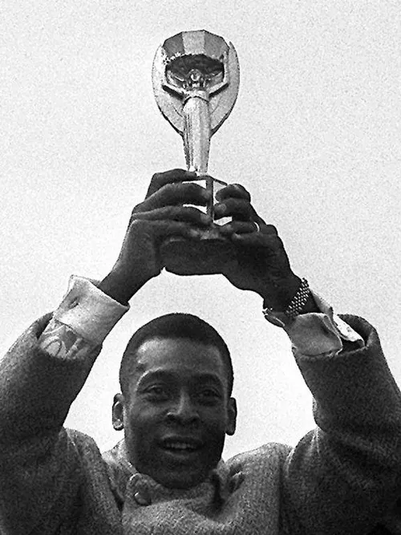
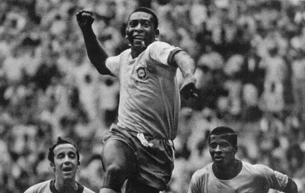

Pelé
O Rei do Futebol e Atleta do Século

O início de uma lenda
Em 1956, o jovem adolescente Edson Arantes do Nascimento chegou à cidade de Santos para fazer um teste no Santos Futebol Clube, onde logo se destacou e começou sua trajetória profissional.
Apenas dois anos depois, aos 17 anos, Pelé foi convocado para a Seleção Brasileira e foi fundamental na conquista da Copa do Mundo de 1958 na Suécia, marcando gols inesquecíveis e chorando de emoção ao final da partida.
Durante sua carreira, ele transformou a camisa 10 no símbolo máximo do craque de um time. Ele não apenas dominou o futebol brasileiro, mas também se tornou um ícone global, parando até mesmo uma guerra na Nigéria em 1969, quando as facções concordaram com um cessar-fogo para ver Pelé e o Santos jogarem.
Ele encerrou sua carreira com incríveis 1.281 gols registrados, consolidando-se como o maior artilheiro da história do esporte.
"O sucesso não é acidente. É trabalho duro, perseverança, aprendizado, estudo, sacrifício e, acima de tudo, amor pelo que você está fazendo."
Pelé
Curiosidades do Rei:
- Pelé é o único jogador da história a vencer três Copas do Mundo.
- Seu apelido na infância era "Dico".
- Ele atuou como Ministro dos Esportes do Brasil na década de 1990.
- A palavra "Pelé" foi incluída no dicionário Michaelis como sinônimo de "excepcional" e "incomparável".
- Ele encerrou sua carreira jogando nos Estados Unidos pelo New York Cosmos.
"Eu nasci para jogar futebol, assim como Beethoven nasceu para escrever música e Michelangelo nasceu para pintar."
Pelé - Sobre seu dom natural para o esporte
